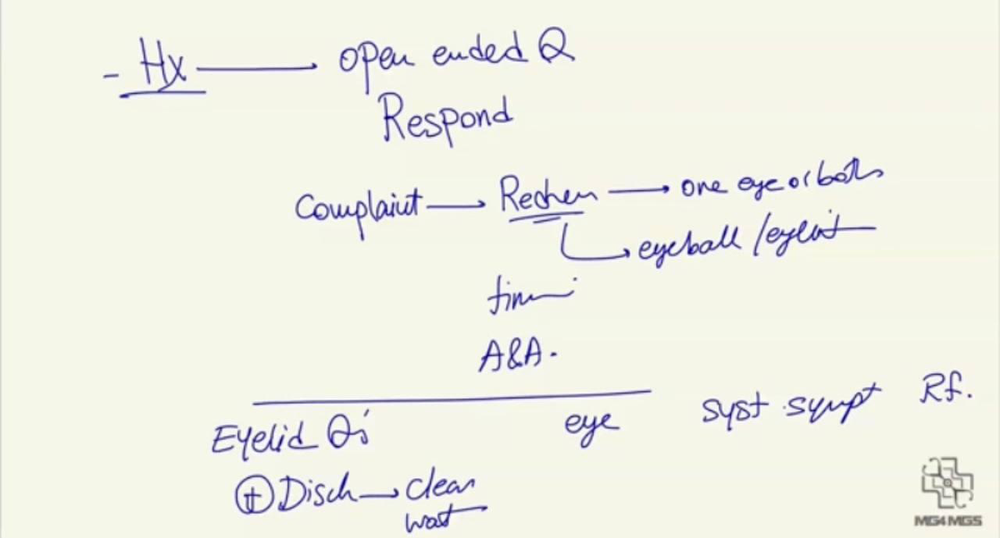
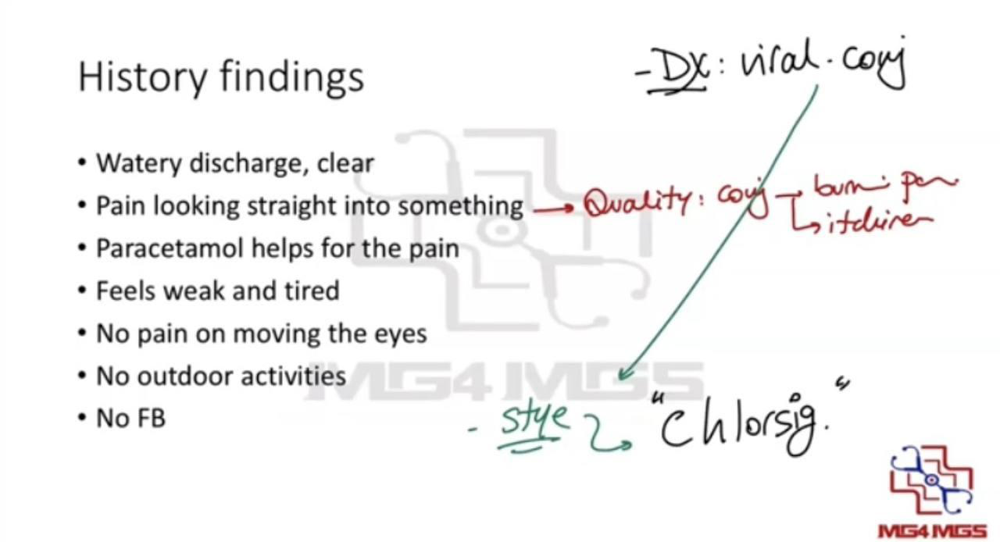

Source: Dr. Amir workshop — Med workshop 2 - 2026 / CLASS 3 OPHTHALMOLOGY (Aug 2026 drop) · Specialty: ophthalmology
A man presents with a red eye that has not improved despite five days of antibiotic drops. His three-year-old son had similar symptoms nine days ago that resolved spontaneously; the child attends childcare. A photograph is provided on the stem (nominally viral conjunctivitis, though the appearance can mimic other causes). Tasks: take a history for five minutes; give the diagnosis and differentials; and outline a management plan for viral conjunctivitis.
Open with an open-ended question and respond to the concern, then explore the complaint across redness, watery discharge and grittiness.
Redness: one or both eyes; eyeball itself or eyelids; timing; aggravating/relieving factors.
Eyelid questions: swelling and redness; discharge (present - clear and watery); itch.
Eye questions: vision problems, photophobia, floaters, pain on eye movement.
Systemic: feeling weak and tired; sick contacts (his son, now recovered); ask all red flags.
Discharge is watery and clear; there is a burning/aching pain looking straight ahead (conjunctivitis can cause burning pain); paracetamol helps the pain; he feels weak; no pain on eye movement; no foreign body; no outdoor activity. With a clear sick contact, typical symptoms, no red flags, clear discharge and failure of antibiotic drops, the diagnosis is viral conjunctivitis.
Note on treatment already tried: in Australia the common over-the-counter antibiotic eye drop is Chlorsig (chloramphenicol). If asked which drop was used, it is almost always chloramphenicol.
Explain that viral conjunctivitis is inflammation of the surface covering of the eye caused by a virus. Supporting features: the son is unwell and attends childcare, and there is clear watery discharge.


Reviewed by: physical-examination-expert (Australian clinical educator, ophthalmology focus) · fact-checked against the irStudy medical textbook RAG index.